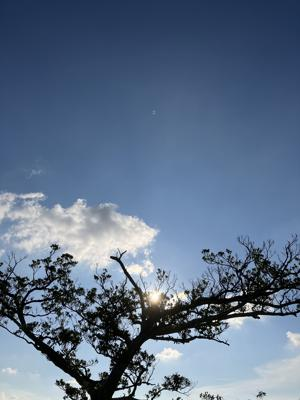
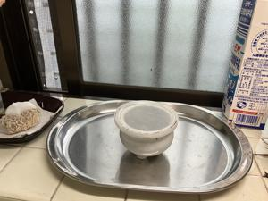
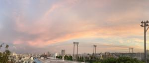
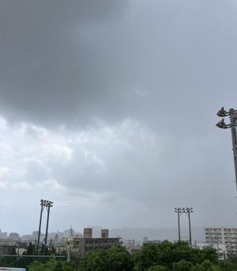

うるがいの話 ある日
最新: ヒラウコーの評価【うるがいの話 ある日】とは 一日だけのプログです
『うるがいの話』の最新一日だけのプログで、通信料が少なく経済的だ。カニの画像をクリックすると全ての日付が載る『うるがいの話』サイトを表示します
|
|
【うるがいの話】 うるがい(ｳﾙｶﾞｲ urugai)とは、『もずくがに』の名前でとても大きくなります。 |
|---|---|
|
|
【カミマヤーの話】 猫のことを方言でマヤーといいます。カミマヤー（kamimayaa）とは、神の猫のことです。 |
|
【たながぁの音楽】 たながぁ（ﾀﾅｶﾞｰ tanagaa）とは手長えびのことで、何種類かあり大きいのは車 エビぐらいになります。 |

|
【ぶながぁの話】 ぶながぁ(ﾌﾞﾅｶﾞｰ bunagaa)とは、赤い髪の毛、赤い身体、そして身長は１ｍ２０ｃｍ ぐらい、川の蟹を食べているの目撃された。場所は沖縄県国頭郡大宜味村のと ある村僕の隣近所に住んでいる爺さんから、聞いた話です。 |
|
|
【ギーマの話】 ギーマ(giima)とは、山原の里山に咲くスズランに似た、 花を付けます。実は食べられます、 気が付くと口の周りが紫になっています。 |
2024年08月14日 (水）ヒラウコーの評価
16:53
 
サーダカ生まれの姉を持った私が、家のカミ事は私の役割なのである。普通
はヨメが毎朝、ヒノカンにヒラウコーをあげるのだが。線香は『高級県産品
読谷線香沖縄黒線香 セット』を長年利用していたのだが、数年前から線香
の灰が、香炉の周りの飛び散るようになった。品質が変化した？。掃除が大
変なので、別の２種類に変えてみた。銘柄の控えがないので、コレですと言
えないが、さらに灰が、香炉をのせているステンレスのトレーに飛び散って
毎回、掃除をしないと行けなくなった（捨てるわけにもいかずそのまま利用
している）。『糸満 新垣 黒線香』、灰が飛ばない！！。なんと、なんと
今後はこれにしようと（売っていないお店もある、値段も高い？が）思いま
した。
今朝の５時５６分の朝焼け

昼前にヨメの高齢になる親戚宅に、お中元をもっていく。２世帯とも仏壇の
部屋に布団が敷かれたままだった。イイデスヨ、片付けなくてもといって線
香をあげ、手を合せる。９０才になったオジサンの家にいくと、タバコの匂
いが！、ドクタ―ストップで長いあいだ禁煙していたが復活したと、オヤ？
啞然とする。昼過ぎから、にわか雨、いったん洗濯物を家に取り込む。あの
朝の綺麗な朝焼けは、この天気の予兆だったのか。
昼の１３時０５分のにわか雨

１６時４６分 ビットコインの総資産 ￥２５、９５２（↑４６３）